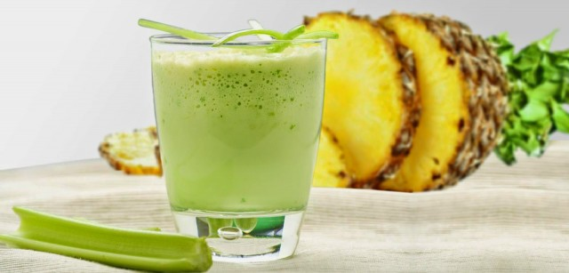

Favoritos:

Aguachile
16 de Mayo de 2018
El origen del aguachile en la zona serrana de Sinaloa, se hace originalmente con agua hervida y los chiles originarios del estado: los chiles “chiltepines”, unos chiles redondos y pequeños que se dejan secar en la planta dándole un picor (por el nivel de capsaicina) sobresaliente. En la sierra se hacía carne machaca, se le agregaba agua hirviendo y se le agregaban cinco o seis chiles de esa variedad. Con el tiempo se fueron bajando esos chiles a la ciudad y fueron llegando a las costas y es entonces cuando se hace una réplica de ese chile pero con el ingrediente estrella del estado: el camarón. Agregando un poco de limón, chile piquen, la sal, un poco de pimienta, hasta volverse el plato insignia del estado.
Jugos naturales
15 de Junio de 2017
No hay nada mejor que empezar cada día con energía, vitalidad y buen humor. Sentirse bien no debe ser un lujo, sino un estilo de vida habitual y cotidiano; dormir el tiempo necesario, cenar ligero, o meditar un poco al despertar, son algunas recomendaciones para proveer al cuerpo de esa medicina natural preventiva, la más eficaz para mantener un buen estado de salud. Incluso, la simple acción de tomar un vaso de agua tibia con el jugo de un limón en ayunas, puede hacer una gran diferencia.